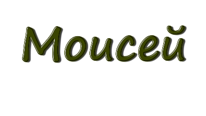

Главная
Маршруты
Маршрут 1
Маршрут 2
Маршрут 3
Маршрут №2
Это самый короткий маршрут . Он включает в себя поездку на верблюдах и ночёвку под открытым небом. Рассчитан маршрут на 2 дня.
 Это самый короткий маршрут . Он включает в себя поездку на верблюдах и ночёвку под открытым небом. Рассчитан маршрут на 2 дня.
Это самый короткий маршрут . Он включает в себя поездку на верблюдах и ночёвку под открытым небом. Рассчитан маршрут на 2 дня.